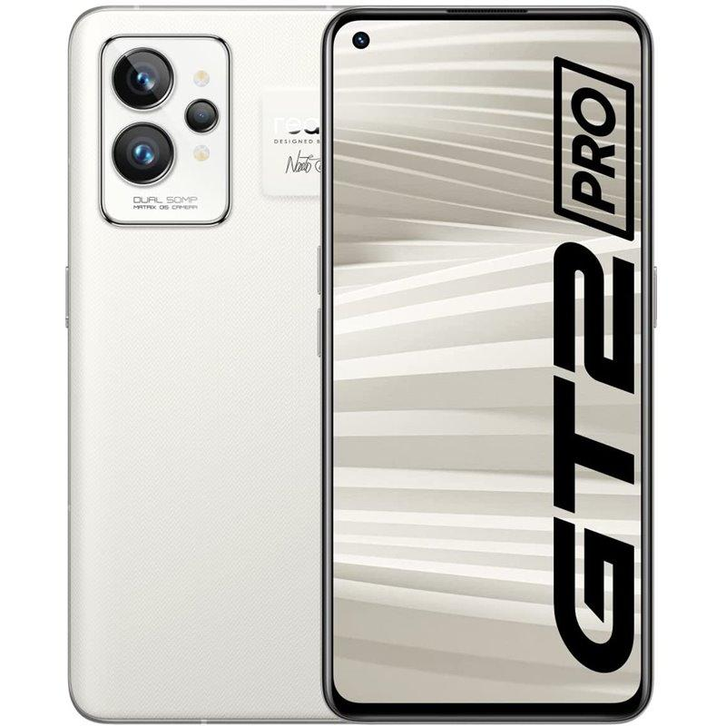
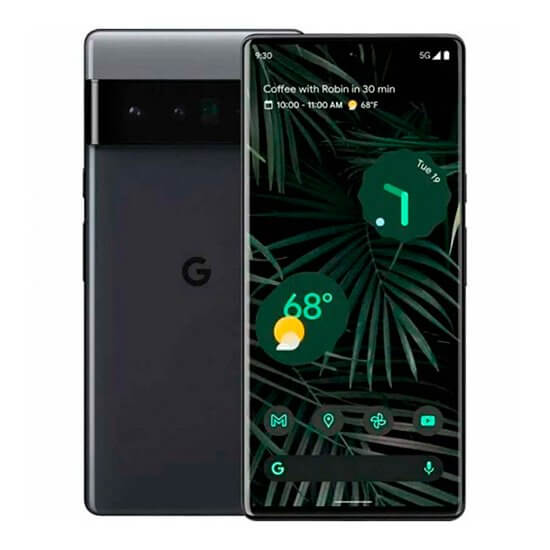

iphone 14 pro max
O Apple iPhone 14 Pro Max não é apenas grande na forma, é grande no carácter. Há um design renovado que é realmente impressionante, especialmente neste formato maior, juntamente com melhorias de desempenho, melhorias na bateria, melhorias na câmara, o Ecrã Sempre Ligado e a funcionalidade Dynamic Island. Claro, é bastante pesado, muito caro, e oferece todas as mesmas características que o seu irmão mais pequeno, mas é um dispositivo impressionante para aqueles que querem um ecrã maior ou mais vida útil da bateria.

O Apple iPhone 14 Pro Max apresenta uma estrutura de aço inoxidável de qualidade cirúrgica, traseira de vidro e proporciona uma qualidade de construção sólida e super-premium. Há também um design renovado, tal como o seu irmão mais pequeno, o iPhone 14 Pro. Na parte inferior, encontrará - talvez decepcionantemente - a porta Lightning e não uma porta USB-C, enquanto os altifalantes estão posicionados de ambos os lados. Há também um altifalante no topo do visor, mas já não está no topo do entalhe. A Ilha Dinâmica adapta-se com base na aplicação ou notificação que é mostrada. Por exemplo, ao utilizar a Apple Pay, a Ilha Dinâmica transforma-se num quadrado, enquanto que quando se muda o botão de silêncio, este se alarga para reconhecer a mudança.
Queres saber mais? Ve este vídeo que explica mais sobre o novo iphone 14 pro max.
samsung s22 ultra
A experiência de tirar um smartphone da caixa é cada vez mais simples, sem deixar de ser premium neste caso. Assim que abrimos a caixa, encontramos logo o Galaxy S22 Ultra, ficamos deslumbrados e já não queremos largá-lo. O Galaxy S22 Ultra é francamente inspirado na linha Note, mais concretamente no Note 20 Ultra que tive oportunidade de testar em 2020. E se na altura me apaixonei por esse equipamento e por algumas das suas capacidades, era difícil não gostar deste a aprimorado S22 (Note) Ultra. Obviamente que estamos a falar de um equipamento com 6,78” polegadas, gigantesco para muitas mãos.

Mas isso sempre foi apanágio da linha Note, e deves ter isso em conta antes de o comprar se tamanho e peso forem um problema para ti. Até porque ao juntares-lhe uma capa, não será amigo de muitos bolsos de calças. A Samsung escolheu colocar as câmaras traseiras separadas, e não na tradicional ilha. E sinceramente ficou uma escolha de design bastante sóbria, e esta versão em preto do terminal é simplesmente apaixonante. Por 1279 € não é um smartphone barato, e isso pode afugentar alguns interessados. Mas os quatro anos de atualizações Android garantidos pela Samsung dão aos compradores uma sensação de longevidade que até há bem pouco tempo a marca não oferecia.
Queres saber mais? Ve este vídeo que explica mais sobre o novo samsung s22 ultra.
Realme gt 2 pro
Pelo valor facial, é justo assumir que não se pode construir um telefone padrão sem assumir alguns compromissos. É certamente o caso do Realme GT 2 Pro, mas no geral, este é um dispositivo que atinge a maioria do essencial. Combinando um ótimo software, uma exibição brilhante, uma performance de bandeira, um carregamento rápido e um design fantástico, você tem um smartphone fantástico no seu bolso. Embora possa haver razões ambientais para avançar com o material de papel no verso, as alegações da Realme de ser mais consciente do planeta parecem um pouco risíveis quando se percebe quantos modelos de telefone a empresa lança por ano - e com que frequência actualiza os modelos existentes.
Como encontramos com outros modelos de telefone superior, a resolução mais alta não é ativada por padrão. Em vez disso, o telefone está programado para Full HD para poupar bateria e ajudar o telefone a manter-se rápido mesmo sob carga. No entanto, pode alterá-lo e selecionar a resolução total de 1400 x 3216, se desejar. Se há uma área em que o Realme GT 2 Pro realmente faz todas as paragens - além do ecrã - está no hardware e no desempenho interno. Como todos os telefones de maior desempenho, este tem o processador principal Snapdragon 8 Gen 1, muito RAM e uma bateria grande, além de um carregamento rápido.
Queres saber mais? Ve este vídeo que explica mais sobre o novo Realme gt 2 pro.
Google pixel 6 pro
O smartphone topo de gama da Google é comandado pelo processador Google Tensor, desenvolvido de forma caseira. Tem um ecrã LTPO AMOLED com 6,71 polegadas, resolução 2K e 120 Hz de taxa de atualização variável. No campo da fotografia dispõe de uma câmara principal de 50 MP, acompanhada por uma ultrawide de 12 MP e telefoto de 48 MP com zoom ótico de 4x. A câmara frontal colocada num punch-hole central tem 11,1 MP. Isto significa que se quiseres o melhor smartphone da Google, o Pixel 6 Pro, podes comprá-lo na Amazon de Espanha ao melhor preço. Este foi lançado na Europa a partir de 899 €, mas podes comprá-lo por apenas 861,90 €.
De destacar que o smartphone tem uma bateria de 5003 mAh e carregamento rápido com fios de 30 W. O carregamento sem fios é de 23 W e este conta também com carregamento reverso e USB Power Delivery 3.0. O sensor de impressões digitais está embutido no ecrã, temos proteção Gorilla Glass Victus, altifalantes estéreo, Bluetooth 5.2 e certificação IP68. De destacar ainda que com este terminal tens sempre as atualizações Android em primeiro lugar.
Queres saber mais? Ve este vídeo que explica mais sobre a nova Asus ROG Strix X670-E Gaming WiFi.